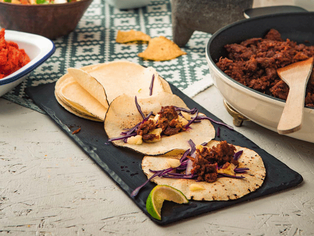
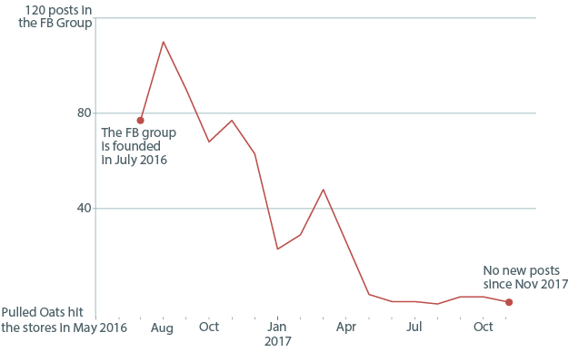

Novel Food Products
By Paivi Ala-Risku
Published August 17, 2018
In May 2016 a new food, a plant-based protein product called "Pulled Oats" hit the grocery stores in Finland. It was hyped for the whole spring, a new invention for vegetarians and enviromentally conscious meat-eaters alike, supposed to be the best thing since the invention of tofu. It's made out of only five ingredients: oats, pea protein, fava bean protein, cold-pressed canola oil and salt.
This is how Pulled Oats look like after cooking. Pretty much like minced meat which it tries to mimic. Photo: Gold&Green Foods Ltd
When it hit the market, it was very hard to get since the company was not able to produce it that much. So there were huge lines in grocery stores and everyone was eager to know when a particular store got a patch of Pulled Oats. So then somebody founded a Facebook Group called Pulled Oats Radar where people posted their sightings of this product.
Here I track the postings and find out, how the hype for Pulled Oats proceeded and when the company was finally able to produce enough Pulled Oats to fullfill the graving. Nowadays, in 2018, Pulled Oats is still a popular product but you might ocassionally spot it in sale because the consume by date is approaching. So the hype has certainly vanished.
Got interested? The company boasts that Pulled Oats will be available in the US later this year.
Pulled Oats Sightings in a Facebook Group
When Pulled Oats hit the market it was so hard to get that people reported their sightings of Pulled Oats in a FB Group "Pulled Oats Radar". Nowadays Pulled Oats are widely available.
SOURCE: Facebook Group called Nyhtökauratutka (or Pulled Oats Radar translated to English)